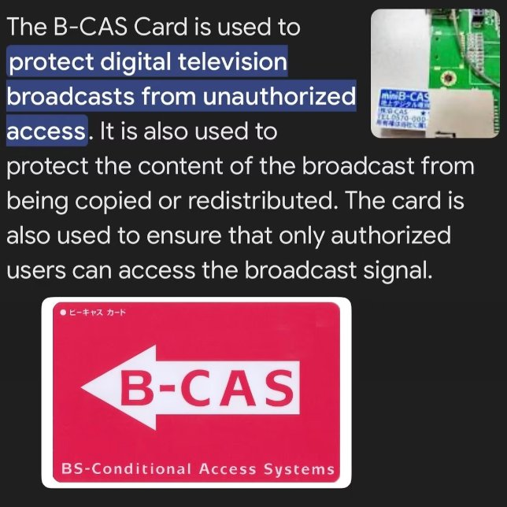

即使在日本二世古享受滑雪，宾客也可以沉浸在 Oolaa 镜面电视的豪华之中——这是一块旨在提供卓越娱乐、又不会打扰山区酒店浴室宁静的屏幕。尊贵的 Park Hyatt Niseko 在每间浴室都设有 Oolaa 镜面电视，让宾客在整个住宿期间都能享受到智能娱乐与创新科技。
二世古是一个特别的目的地。宾客白天在世界上最受推崇的粉雪上消磨时光，夜晚则慢慢恢复体力。滑雪酒店的浴室不是一个过渡空间；它是仪式的一部分——慢慢泡澡、慢慢回暖。一台属于那里的电视要尊重这个房间：想看时出现，不看时隐形。镜面电视的显示区域采用镜面饰面，这块玻璃首先呈现为镜子，其次才是一块屏幕。
每间浴室都有一台镜面电视
一致性是 Park Hyatt 的标准，而这件事比听起来难。一间漂亮的浴室是一张照片；每间浴室都有一台电视，则是一项运营——同一个体验，一个房间接一个房间、一层接一层，提供给每位入住的宾客。全物业统一选用同一款 Oolaa 镜面电视，正好为酒店带来这一点：整个物业运作方式一致的浴室娱乐，背后是单一制造商，而不是一堆本地采购的拼凑。
对宾客来说，吸引力立刻见效。早晨洗漱时看新闻。夜晚泡澡时播放一部电影。浴室不再是套房里唯一体验暂停的房间。
大多数访客没有听过的 B-CAS 细节
这正是这个项目区分制造商与转售商的地方。在日本看数字电视，需要一张 B-CAS 卡——连部分本地人都未必知道。一台没有 B-CAS 卡运往日本的电视，在广播用途上只是一件家具。任何供应商都可以卖一块屏幕给酒店；让那块屏幕真正接收到日本数字电视、在每个房间都能使用，则是另一回事。

Oolaa 从源头处理。作为领先制造商，Oolaa 在中国——自己的工厂里——生产了 277 台配备 B-CAS 卡的先进镜面电视，在不妥协质量与服务卓越的前提下，为酒店提供一个节省成本的方案。这些卡不是事后才想到的，也不是本地的权宜之计；它们是生产规格的一部分，一台接一台。
这个项目说明了什么：酒店浴室电视
三个教训，远远适用于北海道以外。第一，本地广播标准是规格，不是细节——下单之前要检查清楚，不要等到安装之后。第二，工厂直供生产改变了可能性：像 B-CAS 这种要求，应用在 277 台设备上，当制定规格的与制造的是同一家公司时，就变得很简单。第三，浴室现在是酒店竞争的标准战场，胜出的物业会把镜子当作媒体，而不是洁具。
Oolaa 将这个组合——香港公司、深圳自家工厂、港澳 31,000+ 次安装——带到远超主场市场的酒店与住宅项目。这件事有一种恰好的对称：一项为香港高楼浴室而完善的科技，在一家日本滑雪度假酒店的浴室里再次证明自己，那里适用的是全世界最严格的酒店业市场期望。二世古的雪离香港很远。浴室的标准却不远。
如何为国际酒店制定浴室电视规格
对正在计划同类工程的酒店集团来说，二世古项目提供了一个实用的顺序。从宾客出发，不要从硬件出发：决定浴室屏幕是为了什么而设置——清晨的新闻与天气、夜晚泡澡全程的娱乐——并据此确定尺寸与摆放。然后在下任何订单之前，审查目的地的广播要求；日本的 B-CAS 系统就是一个例子，一批通用的国际货运会悄悄地达不到标准。最后，要衡量制造商，而不只是看单价：工厂直供的生产商，可以将目的地专属要求直接纳入生产批次中，在几百个房间之间保持质量一致，并在开业日之后长期支持物业。最便宜的屏幕，很少是最便宜的安装。
重点一览
- Park Hyatt Niseko 每间浴室都设有 Oolaa 镜面电视。
- 在日本看数字电视需要 B-CAS 卡——一个连部分本地人都不知道的要求。
- Oolaa 在中国自家工厂生产了 277 台配备 B-CAS 卡的镜面电视。
- 镜面电视的显示区域同样采用镜面饰面，这块玻璃首先呈现为镜子。
- Oolaa（Viewdex Limited）：香港公司，深圳自家工厂，港澳累计 31,000+ 次安装。
常见问题
为什么在日本看电视需要 B-CAS 卡？
在日本收看数字电视需要 B-CAS 卡。没有它，电视就接收不到日本数字广播——这是一个连部分本地人都未必知道的细节。
Oolaa 向 Park Hyatt Niseko 供应了多少台镜面电视？
277 台先进镜面电视，每台配备 B-CAS 卡，在 Oolaa 位于中国的自家工厂生产。
镜面电视关掉时看起来像电视吗？
不像。显示区域采用镜面饰面，首先呈现为镜子，打开时才变成屏幕。
Oolaa 镜面电视由谁制造？
Oolaa（Viewdex Limited），一家在深圳设有自家工厂的香港公司——工厂直供，港澳累计 31,000+ 次安装。